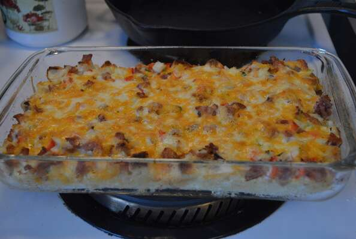

Another husband-approved recipe. Made a couple times recently because of how easy it is to make! This recipe is easy to double or triple, but you may have to cook a bit longer if doing so.

Steps
- Step 1
Preheat oven to 350 degrees F (175 degrees C). Grease a 9x13-inch baking dish.
- Step 2
Stir Cheddar cheese, eggs, bacon, bread, red bell pepper, green onion, milk, garlic, salt, and black pepper together in a bowl until well-combined; pour into prepared baking dish.
- Step 3
Bake in the preheated oven until eggs are set, 20 to 25 minutes.
Ingredients
- 1 cup shredded Cheddar cheese
- 6 eggs, whisked
- 6 slices bacon, diced
- 2 slices bread, cubed
- ⅓ red bell pepper, diced
- 2 green onions, chopped
- 3 tablespoons milk
- ½ teaspoon minced garlic, or to taste (Optional)
- salt and ground black pepper to taste